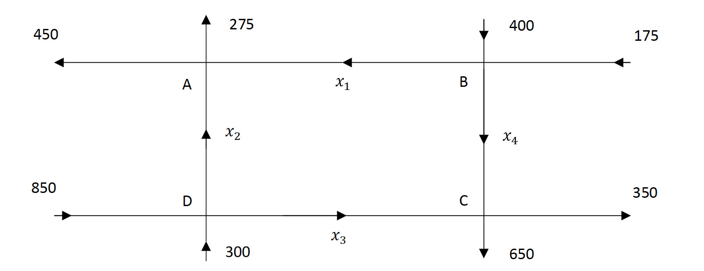
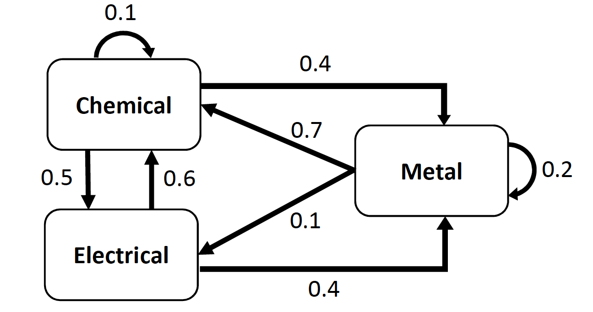
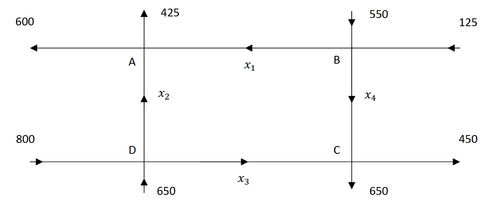

Section 7.2 Modeling with Systems of Equations
Elementary applications of linear algebra often involve describing a scenario with a system of equations and then solving the system. In this section we present four such applications: traffic flow, balancing chemical equations, and two economics applications.
Example 7.2.1. Traffic Flow.
Consider the network of streets in the figure below. The numbers and variables in the figure represent the traffic flow, measured in vehicles per hour (vph), along each street segment. The goal is to find the values of \(x_1\) through \(x_4\) and analyze the flow of traffic.

Our model is based on the following rather obvious assumption:
All traffic that enters an intersection must leave the intersection.
We organize the flow in and out of each intersection in the following table:
Rewriting the four equations results in the final model:
To solve this system, we use techniques from Section 7.1. We can write this system in the form \(A\mathbf{x} = \mathbf{b}\) and try to calculate \(\mathbf{x} = A^{-1}\mathbf{b}\text{,}\) but it turns out the matrix \(A\) is not invertible.
Thus we must use row-reduction. We write the augmented matrix and row-reduce it:
This yields the general solution:
The fact that there is a free variable means that traffic can flow through this network in infinitely many ways, a result that should not be surprising. For example, if we know that on a given day, \(x_4 = 250\text{,}\) we would have \(x_1 = 325\text{,}\) \(x_2 = 400\text{,}\) and \(x_3 = 750\) vph.
With this general solution we can do more than simply calculate specific traffic flows. From the equation \(x_1 = 575-x_4\) we see that the maximum value of \(x_4\) is 575 vph; otherwise \(x_1\) would be negative. Also, the equation \(x_2 = 150+x_4\) tells us the minimum value of \(x_2\) is 150 since \(x_4\) cannot be negative. Thus if we were planning roadwork along the road segment corresponding to \(x_2\) resulting in restricted traffic flow, we would need to make sure the road could handle at least 150 vph.
Example 7.2.2. Balancing Chemical Equations.
In a chemical reaction, substances (called reactants, often in the form of molecules) composed of atoms react to form new substances (called products). A simple assumption behind every chemical reaction is:
Atoms cannot be created or destroyed in a reaction.
As a simple example, sulfur (\(\text{S}_8\)) reacts with oxygen (\(\text{O}_2\)) to form sulfur dioxide (\(\text{SO}_2\)). This is represented by the chemical equation
A quick inspection of this equation reveals there are more sulfur atoms (S) on the left than the right, which violates the assumption. Thus we need to determine how many of each molecule react to form how many molecules of the product. This is called balancing the equation. By inspection, a balanced version of this equation is
Not every chemical equation can be balanced so easily by inspection. For example, ethylenediamine (\(\text{C}_2\text{H}_8\text{N}_2\)) reacts with dinitrogen tetroxide (\(\text{N}_2\text{O}_4\)) to form nitrogen (\(\text{N}_2\)), carbon dioxide (\(\text{CO}_2\)), and water (\(\text{H}_2\text{O}\)) according to the equation
The coefficients \(x_1, \dots, x_5\) represent the unknown number of each molecule involved. The goal is to find appropriate integer values of these unknowns. We begin by equating the number of each atom from each side of the equation:
Rewriting the four equations results in the final model:
We solve this model by row-reduction:
This yields the general solution
To find a particular solution, we choose the smallest positive integer value of the free variable so that all the other variables are positive integers. We choose \(x_5 = 4\text{,}\) yielding \(x_1 = 1\text{,}\) \(x_2 = 2\text{,}\) \(x_3 = 3\text{,}\) and \(x_4 = 2\) so that the balanced equation is
Example 7.2.3. Equilibrium Prices.
Consider a simple economy that consists of three sectors: Chemical, Electric, and Metal. Each sector produces some yearly output (measured in millions of dollars). Each sector also consumes a certain proportion of the output of the other sectors as illustrated in Figure 7.2.4. (A sector consuming a portion of its own output can be thought of as an operational expense.)

Table 7.2.5, called an exchange table, summarizes this information. Note that each column in this table adds up to exactly 1 to model the fact that each sector’s output is totally consumed by the other sectors.
| Proportion of Output From | |||
|---|---|---|---|
| Chemical | Electrical | Metal | Purchased by |
| 0.1 | 0.6 | 0.7 | Chemical |
| 0.5 | 0 | 0.1 | Electrical |
| 0.4 | 0.4 | 0.2 | Metal |
A reasonable assumption about a healthy economy is:
The total expenses of each sector must equal its output.
In other words, a sector’s expenses must equal its income. An economy satisfying this assumption is said to be in equilibrium, and the resulting outputs are called equilibrium prices. To find equilibrium prices, let \(x_c\text{,}\) \(x_e\text{,}\) and \(x_m\) denote the outputs from chemical, electrical, and metal, respectively. The assumption yields the system of equations
We rewrite this system by subtracting the quantities on the right hand side of the equation:
Then we solve by row-reduction:
This yields the general solution:
Any nonnegative choice for \(x_m\) yields a specific set of equilibrium prices. For example, if \(x_m = 15\text{,}\) then \(x_c = 19\) and \(x_e = 11\text{.}\)
Example 7.2.6. The Leontief Input-Output Model.
In this example we present another economics application that resembles equilibrium prices, but there are some key differences. One difference is that there will be an “open” sector which consumes products but doesn't produce anything.
Consider an open economy with three sectors: mining, electrical, and auto. To produce $1 of mined material, the mining operation must purchase $0.1 of its own product, $0.3 of electricity, and $0.1 worth of autos for its transportation. To produce $1 of electricity, it takes $0.25 of mined material, $0.4 of electricity, and $0.15 of autos. Finally, to produce $1 worth of autos, the auto-manufacturing plant must purchase $0.2 of mined material, $0.5 of electricity, and consumes $0.1 of autos. Assume also that during a period of one year, the open sector has a demand of $50 million worth of mined material, $75 million worth of electricity, and $125 million worth of autos. Find the annual output of each sector in order to satisfy demand.
To solve this problem we first organize the inter-sector demands in Table 7.2.7 called an input-output matrix. This matrix looks much like an exchange table, but the entries of the matrix represent dollar amounts, not proportions. Also note that the columns do not add up to one and that the columns represent the purchaser, not the rows as in an exchange table.
| $ Purchased by | |||
|---|---|---|---|
| Mining | Electrical | Auto | Purchased from |
| 0.1 | 0.25 | 0.2 | Mining |
| 0.3 | 0.40 | 0.5 | Electrical |
| 0.1 | 0.15 | 0.1 | Auto |
A reasonable assumption about this scenario is:
The total demand from each sector must equal its output.
Let \(x_m\text{,}\) \(x_e\text{,}\) and \(x_a\) denote the annual outputs from mining, electrical, and auto, respectively. The assumption yields the system of equations
We could solve this system by rewriting and row-reducing like we did in Example 7.2.3, but we'll take a different approach. First we'll rewrite the system in matrix form
or more generically,
where \(A\) is the input-output matrix, \(\pmb{d}\) is the demand vector from the open sector, and \(\pmb{x}\) is the unknown output vector. Then we rewrite this matrix equation:
For this example,
We can compute the inverse of this matrix and solve for the output vector \(\pmb{x}\) in SageMath:
So mining should produce $229.9 million, electricity $437.8 million, and auto $237.4 million. One benefit of doing the calculations with matrices rather than row-reduction is that if the demand from the open sector were to change, then all we need to do is change \(\pmb{d}\) in the calculation \(\pmb{x} = (I_n - A)^{-1} \pmb{d}\text{.}\)
Exercises Exercises
1.
Consider the road network pictured below.

(a)
Construct a system of linear equations that models the traffic flow and find the general solution.
(b)
What is the minimum possible value of \(x_3\text{?}\)
(c)
What is the maximum possible value of \(x_4\text{?}\)
(d)
Suppose the 650 vph flowing into intersection D from the bottom were changed to 600 vph. Explain why there would be no solution to the resulting system of linear equations that models the traffic flow.
2.
Balance each of the following chemical equations:
(a)
Potassium permanganate reacts with hydrochloric acid to form potassium chloride, manganese (II) chloride, water, and chlorine gas:
(b)
Sodium bicarbonate reacts with citric acid to form sodium citrate, water, and carbon dioxide:
3.
Consider an economy with two sectors: Manufacturing and Services. Each year, Manufacturing sells 75% of its output to Services and the rest is an operational expense. Likewise, Services sells 85% of its output to Manufacturing and consumes the rest.
(a)
Set up an exchange table for this economy.
(b)
Find the equilibrium prices if the annual output from Services is $30 million.
4.
Consider an economy whose exchange table is given below. Find the equilibrium prices if the annual output from Services is $46 million.
| Prop. of Output from | |||
|---|---|---|---|
| Auto | Services | Food | Purchased by |
| 0.1 | 0.35 | 0.1 | Auto |
| 0.6 | 0.45 | 0.7 | Services |
| 0.3 | 0.2 | 0.2 | Food |
5.
An economy is based on three sectors, agriculture, energy, and manufacturing, plus an open sector. Production of each dollar of agriculture requires an input of $0.2 from the agriculture sector and $0.4 from the energy sector. Production of each dollar of energy requires an input of $0.2 from the energy sector and $0.4 from the manufacturing sector. Production of each dollar of manufacturing requires an input of $0.1 from the agriculture sector, $0.1 from the energy sector, and $0.3 from the manufacturing sector. Find the output from each sector that is needed to satisfy a demand of $20 billion for agriculture, $10 billion for energy, and $30 billion for manufacturing from the open sector.